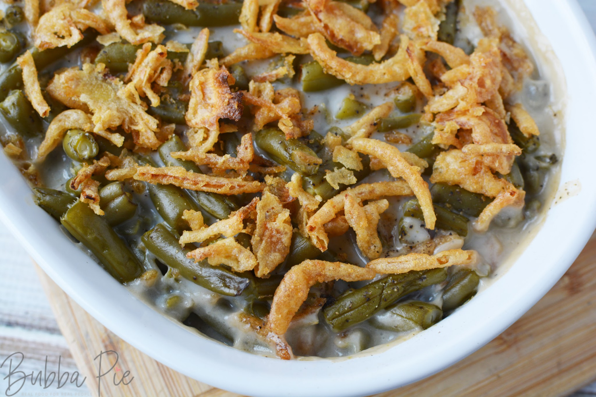

Green Bean Casserole

Description
This is my favorite holiday side and it's easy as hell.
I replace milk with broth so I don't die.
Ingredients
- 1 can cream of mushroom soup
- 3/4 cup chicken or beef broth
- 2 cans green beans
- 1 1/3 cups french fried onions
Instructions
- Preheat oven to 350. Mix it all together except some of the onions.
Put it in a baking dish and bake for 30 min.
- Take out, top with remaining onions, and bake for 5 more minutes.
Home